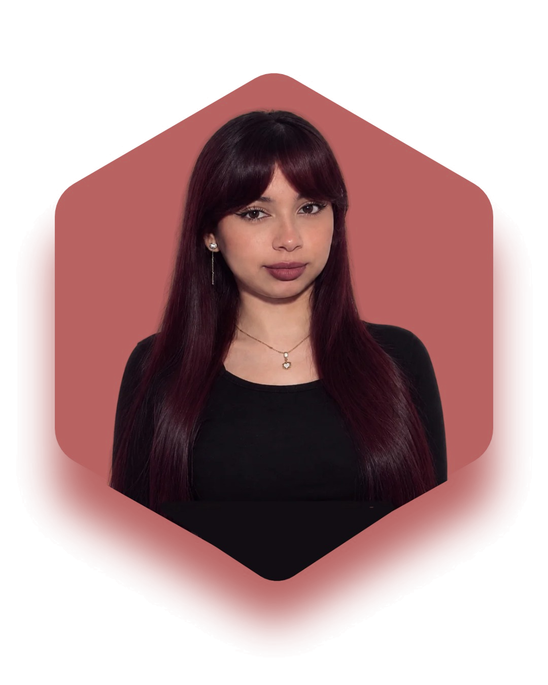
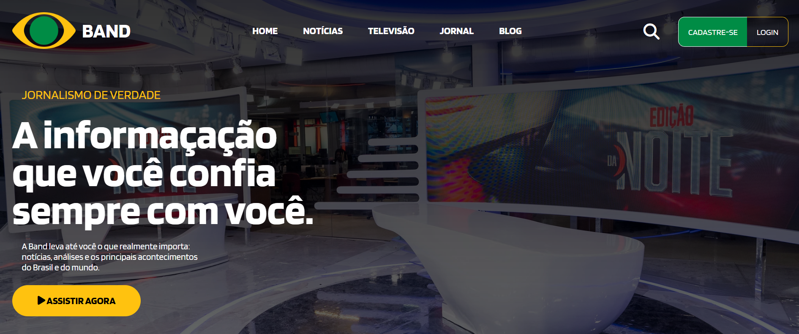
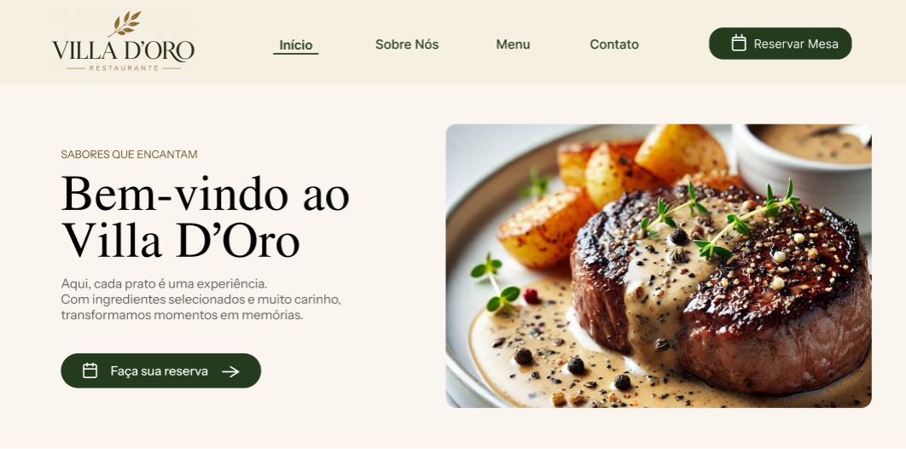

FrontEnd
Já desenvolvi Landing Pages, utilizei APIs e framework
Olá, me chamo
Apaixonada por criar experiências web bonitas, funcionais e intuitivas. Transformando ideias em soluções digitais marcantes através de um código eficiente. Unindo design e tecnologia para entregar resultados que fazem a diferença.

Sou uma Desenvolvedora Front-End e estou construindo minha jornada na tecnologia através de projetos práticos. Gosto de transformar ideias em interfaces modernas, funcionais e responsivas.
Atualmente, venho desenvolvendo minhas habilidades em HTML, CSS, Git e GitHub, enquanto continuo explorando novas tecnologias e ferramentas para evoluir como desenvolvedora.
Já desenvolvi Landing Pages, utilizei APIs e framework
Edição de imagens, logos e banners. Utilizando o Adobe Photoshop
Desenvolvimento de scripts, automação de tarefas e soluções eficientes em lógica de programação.

